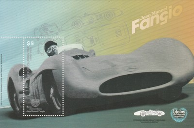
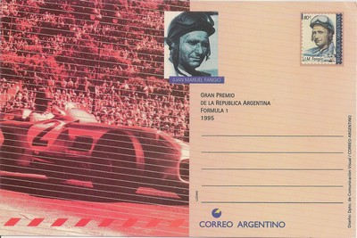

Argentina
 Issue date: 24th October 2009 A mini sheet of two values showing Jose Froilan Gonzalez driving the Ferrari 375 at Silverstone in 1951 - Gonzalez won the race, but came third in the drivers championship that year behind Fangio and Ascari. The sheet also depicts the 2009 Ferrari F60 - the F60 was driven to fourth place in the constructors championship by Felipe Massa and Kimi Raikkonen  Issue date: 2008 Juan Manuel Fangio raced in F1 from 1950 to 1958. He won the drivers championship in 1951 (Alfa Romeo), 1954 (Maserati/Daimler Benz), 1955 (Daimler Benz), 1956 (Ferrari) and 1957 (Maserati). His record of five titles stood for 46 years until it was beaten by Michael Schumacher. Many consider Fangio to be the greatest driver of all time - he has the highest winning percentage (46%) compared to Michael Schumacher's (33%). He is also the only Agentine driver to have won the Argentine Grand Prix. Fangio, unlike later Formula One drivers, started his racing career at a mature age and was the oldest driver in many of his races. During his career, drivers raced almost with no protective equipment. Fangio had no compunction about leaving a team, even after a successful year or even during a season, if he thought he would have a better chance with a better car. As was then common, several of his race results were shared with team mates after he took over their car during races when his own had technical problems. His rivals included Alberto Ascari, Giuseppe Farina and Stirling Moss.  Issue date: 2001 A mini sheet of four values featuring some early F1 cars: Alfa Romeo 159 (1951) Mercedes Benz W196 (1954 - 1955) Ferrari D50 (1955 - 1957) Maserati 250F (1954 - 1960)  Issue date: 1995 A series of postal stationery cards featuring Juan Manuel Fangio. Fangio competed in F1 from 1950 to 1958 - he won the drivers' championship five times, with four different teams (Alfa Romeo, Mercedes-Benz, Ferrari and Maserati) - a feat that has never been repeated. Regarded by many as the greatest driver of all time, Fangio was held in high regard by the drivers. In his final race, Mike Hawthorn had lapped Fangio, but just before Hawthorn crossed the line, he braked to allow Fangio through so that he could complete the full race distance.  Issue date: 1995 A series of postal stationery cards featuring Juan Manuel Fangio. Fangio competed in F1 from 1950 to 1958 - he won the drivers' championship five times, with four different teams (Alfa Romeo, Mercedes-Benz, Ferrari and Maserati) - a feat that has never been repeated. Regarded by many as the greatest driver of all time, Fangio was held in high regard by the drivers. In his final race, Mike Hawthorn had lapped Fangio, but just before Hawthorn crossed the line, he braked to allow Fangio through so that he could complete the full race distance.  Issue date: 1991 A commemorative sheet featuring various Argentinian cars and drivers, including the following from F1: - Carlos Reutemann - Juan Manuel Fangio - Mercedes-Benz W196  Issue date: 1995 A series of postal stationery cards featuring Juan Manuel Fangio. Fangio competed in F1 from 1950 to 1958 - he won the drivers' championship five times, with four different teams (Alfa Romeo, Mercedes-Benz, Ferrari and Maserati) - a feat that has never been repeated. Regarded by many as the greatest driver of all time, Fangio was held in high regard by the drivers. In his final race, Mike Hawthorn had lapped Fangio, but just before Hawthorn crossed the line, he braked to allow Fangio through so that he could complete the full race distance. |